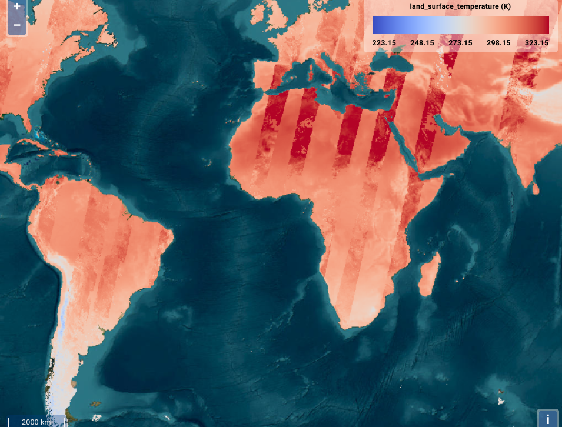
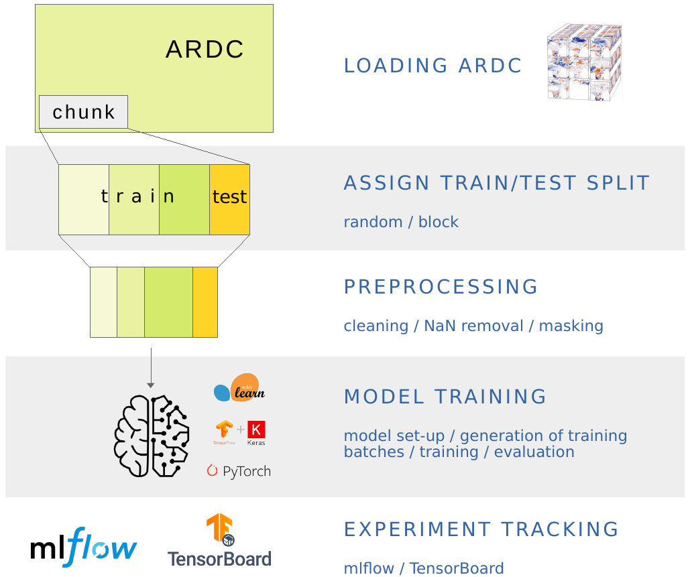
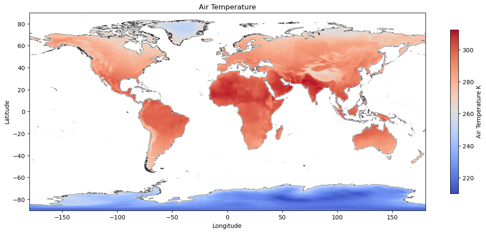
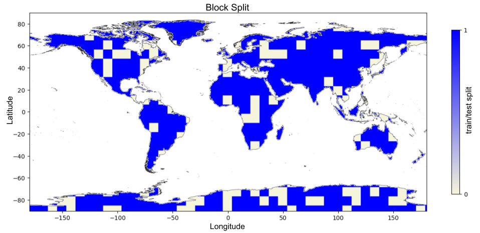
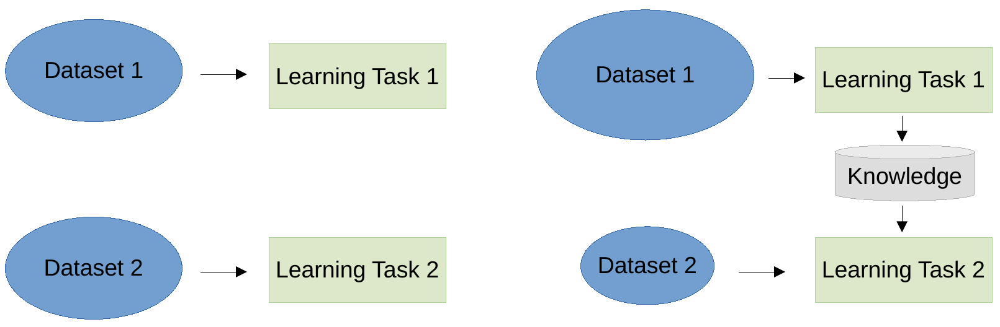
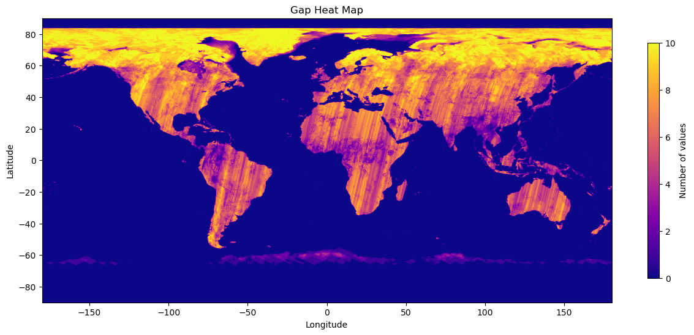
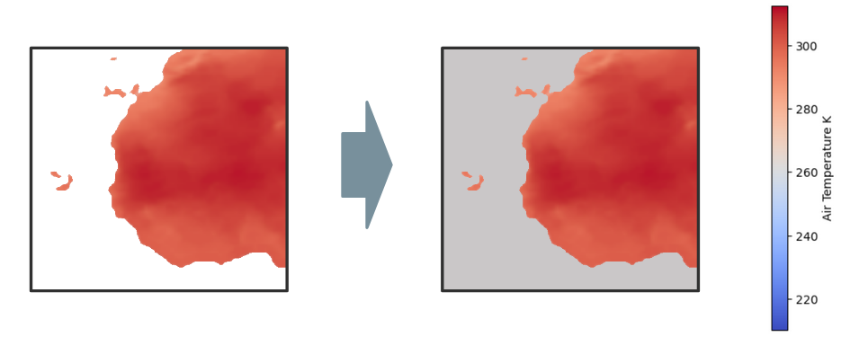

Example Use Case
Example Use Cases#
This toolkit provides a series of tutorial notebooks designed to support geospatial data processing and machine learning tasks on Earth System Data Cubes (ESDCs). Key use cases include:
-
Land Surface Temperature Prediction: Demonstrates land surface temperature prediction. This serves as an introductory example for ESDC analysis.
-
Distributed Machine Learning: Showcases efficient preparation and training of large datasets on distributed systems.
-
Transfer Learning: Illustrates how to reuse pre-trained models for related tasks with limited data.
-
Cube Insights: Explores the characteristics of data cubes, helping inform preprocessing and modeling decisions.
-
Gap Filling: Provides techniques to fill missing data in remote sensing datasets using support vector regression (SVR).
-
ML for Multidimensional Samples with missing values: Demonstrates predictions on multidimensional data, utilizing simpler data imputation methods to address gaps.
Each of these use cases is accompanied by a corresponding Jupyter notebook/Python script, providing step-by-step instructions, code examples, and visualizations to guide users through the entire workflow. Whether you're looking to explore your data, fill gaps, or train machine learning models, this toolkit offers a set of resources to help you achieve your goals.
1. Land Surface Temperature prediction#
This generic use case aims at the prediction of land surface temperature values based on air temperature values derived from the ESDC (Sentinel 3 SLSTR and Terra MODIS sensor, s3 store).
Satellite monitoring is highly sensitive to atmospheric conditions, in particular to cloud cover, leading to the loss of a significant part of data, especially at high latitudes. This may even affect some pixels of an image which are not cloudy, but strongly influenced by cloud cover, usually because they were cloudy shortly before the moment of sensing or because of cloud shadows (Sarafanov et al. 2020). Therefore, remotely sensed land surface temperature images are patchy and gaps need to be filled in to complete the data set. Here, we propose a shallow neural network (Linear Regression) to predict missing values of land surface temperature from consistent air temperature values.

ML prediction of missing Land Surface Temperature values from Air Temperature values (xcube viewer)
Demo Notebooks#
All Jupyter Notebooks follow the same approach, involving five major sections supported by markdown cells, comments, and plots:
- Landsurface Temperature Prediction scikit-learn
- Landsurface Temperature Prediction PyTorch
- Landsurface Temperature Prediction TensorFlow
Approach#
- Import necessary libraries and mltools
- Load Earth System Data Cube (s3 object store)
- Initialize data mask
- Assign train/test split
- Preprocessing (filtering NaNs, standardization, normalization)
- Model set-up (linear regression with 1 node/ shallow neural network)
- Model training and validation over a number of epochs:
- Training:
- Generate training batches using existing data loading and transformation mechanisms from Keras and PyTorch (DataGenerator, DataLoader)
- Train model, and compute average epoch training loss
- Validation:
- Generate testing batches using existing data loading and transformation mechanisms from Keras and PyTorch (DataGenerator, DataLoader)
- Test model, and compute average epoch validation loss
- Training:
- Use model to make predictions & plot results

Machine Learning workflow on Analysis Ready Data Cubes
Preliminary Condition#
As initially described in the demo cases, the missing values of land surface temperature are predicted from consistent air temperature values.
|
 Air Temperature |
 Land Surface Temperature |
Machine Learning Approach#
In this section, the machine learning approach is briefly illustrated based on the TenorFlow notebook. For comprehensive implementations, refer to the demo notebooks to see the full implementations.
1. Load Earth System Data Cube#
First, the zarr data cube is loaded from the s3 data store. The ESDC consists of three dimensions: longitude,
latitude, and time. The focus will be on two variables: "land_surface_temperature" and "air_temperature_2m".
from xcube.core.store import new_data_store
# Initialize the data store for accessing the s3 bucket
data_store = new_data_store("s3", root="esdl-esdc-v2.1.1", storage_options=dict(anon=True))
# Open the dataset
dataset = data_store.open_data("esdc-8d-0.083deg-184x270x270-2.1.1.zarr")
# Select a smaller subset of the data for this demo case
start_time = "2002-05-21"
end_time = "2002-08-01"
ds = dataset[["land_surface_temperature", "air_temperature_2m"]].sel(time=slice(start_time, end_time))
2. Add land mask variable#
Fir the prediction of the land surface temperature values only terrestrial regions are relevant. Therefore, a land variable is assigned to the ESDC to exclude the oceanic regions.
import numpy as np
import dask.array as da
from global_land_mask import globe
from ml4xcube.preprocessing import assign_mask
lon_grid, lat_grid = np.meshgrid(ds.lon,ds.lat)
lm0 = da.from_array(globe.is_land(lat_grid, lon_grid))
xdsm = assign_mask(ds, lm0)
xdsm
3. Train-/ Test Split on Geo-Data#
The ml4xcube.splits module provides two methods to split the data into training and test sets:
random split and block split.
1. Random Split
The random split is a straight forward procedure in classical machine learning application to divide data in a train and a test set. Every data sample is assigned randomly with a predefined probability either to the train or the test. This approach can lead to issues due to spatio-temporal distances and auto-correlation within chunks.
2. Block Split
It is therefore mandatory to utilize techniques that respects the basic principles of geo-data way beyond naive random split method in the Earth system context. To avoid auto-correlation during the training phase of the model, data splitting should rather be guided by the block split strategy, which segments data into contiguous blocks based on geographical and temporal proximity, assigning data points from these blocks to either training or test sets with a specific probability. This strategy keeps closely related data points together, reducing information leakage across the train-test divide and enhancing testing integrity.
 Random Train-Test Assignment |
 Balanced Stratified Train-Test Assignment |
For this case, the assign_block_split method is employed to allocate each data point to either the training or test set:
from ml4xcube.splits import assign_rand_split, assign_block_split
# random splitting
"""
xds = assign_rand_split(
ds = xdsm,
split = 0.8
)
"""
# block splitting
xds = assign_block_split(
ds = xdsm,
block_size = [("time", 10), ("lat", 100), ("lon", 100)],
split = 0.8
)
xds
4. Train-/ and Test Set Creation and Preprocessing#
In this step, data is preprocessed for training using the designated sampler. The dataset undergoes standardization and
is segmented into manageable samples. The feature scaling strategy can be customized via the scale_fn parameter, which
allows for normalization or can be set to None for manual adjustments. If None, a custom feature scaling function can be
introduced using the callback parameter, enabling further preprocessing flexibility with costum functions.
By default, missing values are omitted from the dataset. To apply alternative imputation strategies, adjust the drop_nan
parameter of the XrDataset. For comprehensive guidance on these options, please consult the
ml4xcube API description description.
Following preprocessing, the data is allocated into training and testing sets based on the previously determined block split strategy, ensuring readiness for the subsequent training phase.
import tensorflow as tf
from ml4xcube.datasets.xr_dataset import XrDataset
sampler = XrDataset(ds=xds, num_chunks=3, rand_chunk=False, to_pred='land_surface_temperature')
train_data, test_data = sampler.get_datasets()
# Create TensorFlow 6-datasets for 7-training and testing
train_ds = tf.data.Dataset.from_tensor_slices(train_data).batch(32)
test_ds = tf.data.Dataset.from_tensor_slices(test_data).batch(32)
5. Model Setup, Optimizer and Loss Definition#
A simple linear regression model using TensorFlow is defined, followed by the setup of the optimizer and the loss function definition.
import tensorflow as tf
from tensorflow.keras import layers as L
# Define epoch and learning rate
lr = 0.1
epochs = 10
# Create model
inputs = L.Input(name="air_temperature_2m", shape=(1,))
output = L.Dense(1, activation="linear", name="land_surface_temperature")(inputs)
model = tf.keras.models.Model(inputs=inputs, outputs=output)
model.compile(optimizer="adam", loss="mean_squared_error", metrics=["mae"])
model.optimizer.learning_rate.assign(lr)
6. Model Training and Validation#
Finally, the model is trained using train_ds and validated with the test_ds dataset. Early stopping is employed to
prevent overfitting. The best model weights, according to the validation score, are saved, and the trained model is
returned, ready for predictions.
from ml4xcube.training.tensorflow import Trainer
trainer = Trainer(
model=model,
train_data=train_ds,
test_data=test_ds,
early_stopping=True,
patience=5,
model_path="best_model.keras",
mlflow_run=mlflow,
epochs=epochs,
create_loss_plot=True
)
model = trainer.train()
Results#
After conducting the entire machine learning approach the trained model can be used to make predictions for the missing land surface temperature values:

Land Surface Temperature Filled
Model Tracking#
Within the land surface temperature use cases model tracking is realized through the usage of TensorBoard and mlflow. These tools offer science teams an easy-to-use platform allowing to run and scale their Machine Learning workloads in a collaborative environment supporting versioning and sharing of parameters, models, artefacts, results, etc. within the team and potentially external users. Mlflow supports the MLOps pipelines particularly to log and evaluate experiment runs as well as to store models in a registry. Persistent mlflow deployments are made available on team level to allow each team member to compare their experiments with those of the other team members and to use the trained models of others. TensorBoard as another collaborative tool in this MLOPs space is currently evaluated by the science teams and available as part of the TensorFlow conda kernel to individual users within their JupyterLab session.

Collaborative Experiment Tracking with mlflow.
2. Distributed Machine Learning#
Satellites continuously monitor various Earth parameters across, generating vast amounts of data ideal for training sophisticated machine learning models.
However, preparing and training with such large datasets can be time-consuming and resource-intensive.
The ml4xcube package facilitates efficient handling, preparation, and distributed training of large geospatial datasets, providing tools and workflows
designed to optimize these processes.
Below are demonstrations on efficient dataset preparation (4) and distributed machine learning (5).
For simplicity the previous setup is leveraged to illustrate the functionality.
Demo Scripts#
Data Preparation#
Before training machine learning models, data must be preprocessed and organized. This snippet is crucial for understanding how data, particularly large and complex datasets like those from satellites, is preprocessed before being used for machine learning. It demonstrates loading the data, computing statistics necessary for normalization, and applying these statistics to standardize the data with the help of a callback function. The callback function is used to apply transformations on-the-fly to each data chunk, ensuring that all data is processed uniformly. Further custom preprocessing steps can be added accordingly.
import xarray as xr
from ml4xcube.preprocessing import get_statistics, standardize
from ml4xcube.datasets.multiproc_sampler import MultiProcSampler
# Load sample data
ds = xr.open_zarr('sample_data.zarr')
ds = ds['temperature']
# Create a train and a test set and save them as train.zarr and test.zarr
train_set, test_set = MultiProcSampler(
ds = ds,
train_cube = 'train.zarr',
test_cube = 'test.zarr',
nproc = 5,
chunk_batch = 10,
).get_datasets()
In the next step, the environment for training must be prepared by converting datasets to a format compatible with PyTorch, setting up a basic neural network model, and configuring
the training process. Since in this example 1D data points are utilized for training, the dimension names assigned correspond to a 1D Tuple as well.
If the usage of multidimensional data samples is intended, please define the parameter sample_size of the MultiProcSampler class (e.g. sample_size=[('time', 1), ('lat', 3), ('lon', 3)]).
Overlapping samples are also possible (overlap=[('time', 0.), ('lat', 0.33), ('lon', 0.33)]). For further details check out the corresponding definition in the ml4xcube API
import zarr
import torch
import xarray as xr
import dask.array as da
from ml4xcube.datasets.pytorch import PTXrDataset
def load_train_objs():
train_store = zarr.open('train.zarr')
test_store = zarr.open('test.zarr')
train_set = xr.Dataset(train_data)
test_set = xr.Dataset(test_data)
# Create PyTorch data sets
train_ds = PTXrDataset(train_set)
test_ds = PTXrDataset(test_set)
# Initialize model and optimizer
model = torch.nn.Linear(in_features=1, out_features=1, bias=True)
optimizer = torch.optim.SGD(model.parameters(), lr=0.01)
loss = torch.nn.MSELoss(reduction='mean')
return train_ds, test_ds, model, optimizer, loss
from ml4xcube.datasets.pytorch import prepare_dataloader
from ml4xcube.training.pytorch_distributed import ddp_init, Trainer, dist_train
# Initialize distributed data parallel training
ddp_init()
# Load training objects
train_set, test_set, model, optimizer, loss = load_train_objs()
# Prepare data loaders
train_loader, test_loader = prepare_dataloader(train_set, test_set, batch_size, num_workers=5, parallel=True)
# Initialize the trainer and start training
trainer = Trainer(
model = model,
train_data = train_loader,
test_data = test_loader,
optimizer = optimizer,
save_every = save_every,
model_path = best_model_path,
early_stopping = True,
patience = 3,
loss = loss,
validate_parallelism = True
)
3. Transfer Learning#
Transfer learning corresponds to a way to reuse information obtained by previous model training for a second related task. This can be necessary when only a concise amount of data is available. Therefore, a PyTorch based Jupyter Notebook provides the implementation of Transfer Learning. This technique was illustrated for the same setting as the first example, predicting missing land surface temperature values.
Demo Notebook#

The Basic Concept of Transfer Learning.
4. Cube Insights#
In order to decide which preprocessing steps are required by your machine learning application, the insights module
offers tools for extracting and analyzing characteristics of an xarray.DataArray object. This module includes
functions to assess the completeness and distribution of data within the cube.
Demo Notebook#
The corresponding Jupyter notebook containing the entire workflow can be accessed here:
The detailed workflow in order to analyze the specifics of a data cube is demonstrated in the following:
import xarray as xr
from ml4xcube.insights import get_insights
# Load sample data
ds = xr.open_zarr('sample_data.zarr')
ds = ds['temperature']
# Get insights from the data cube
get_insights(ds)
get_insights function, prints the following statistics (example for a cube containing dimensions named time, latitude, and longitude):
100%|████████████████████| 10/10 [00:09<00:00, 1.10it/s]
The data cube has the following characteristics:
Variable: Land Surface Temperature
Shape: (time: 10, lat: 2160, lon: 4320)
Time range: 2002-05-21 - 2002-08-01
Latitude range: -89.958° - 89.958°
Longitude range: -179.958° - 179.958°
Total size: 93312000
Size of each layer: 9331200
Total gap size: 74069847 -> 79 %
Maximum gap size: 87 % on 2002-06-06
Minimum gap size: 75 % on 2002-08-01
Value range: 222.99 - 339.32
Utiliting the get_gap_heat_map the amount of missing values over time can be computed for every latitude/longitude pixel:
import xarray as xr
from ml4xcube.plotting import plot_slice
from ml4xcube.insights import get_gap_heat_map
# Load sample data
ds = xr.open_zarr('sample_data.zarr')
ds = ds['temperature']
# Generate and visualize the gap heat map
gap_heat_map = get_gap_heat_map(ds)
dataset = gap_heat_map.to_dataset(name='temperature')
plot_slice(
ds = dataset,
var_to_plot = 'temperature',
color_map = "plasma",
title = "Filled artificial gaps matrix",
label = "Number of gaps",
xdim = "lon",
ydim = "lat"
)

Heatmap of available data in the land surface temperature variable over time.
5. Gapfilling#
The gapfilling module provides a method for filling gaps in ESDCs, particularly tailored for remote sensing datasets (Sarafanov et al. 2020). This approach utilizes a support vector regression model to predict missing values based on available data.
After examining the amount of missing values in the cube, the module can be applied to fill the corresponding areas in the cube as showcased in the following example:
Demo Notebook#
6. Predictions for Multidimensional Samples#
An alternative to gap filling can be using simpler methods. For example, missing values can be imputed by replacing them with the mean or a constant placeholder. After exploring the data, it might be evident that gaps are not frequent. In some cases, in environmental modeling for specific regions, missing values may be intentional. For instance, values may appear only in terrestrial regions.
In such scenarios, data imputation can enable the effective use of the entire dataset, allowing for model training and analysis without the complications of incomplete data.
The following notebooks demonstrate the workflow for land surface temperature prediction using multidimensional data with missing values.
Demo Notebooks#
- Machine Learning for Multidimensional Samples (PyTorch).
- Machine Learning for Multidimensional Samples (TensorFlow).

Filling areas outside the continent with constant value.